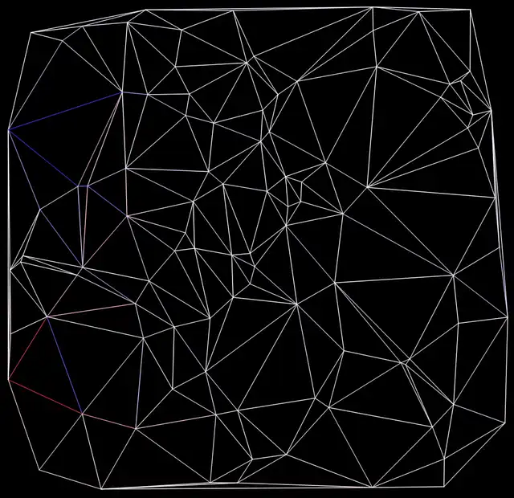
Truss Optimization
Interactive optimization of truss structures minimizing compliance at a given material budget.
Developed out of personal interest
In progress

Interactive optimization of truss structures minimizing compliance at a given material budget.
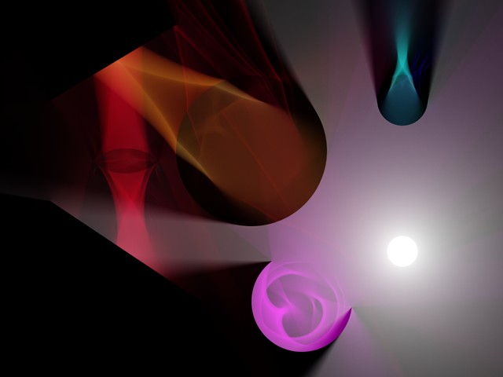
A 2D path tracer running on the GPU, using OpenGL.
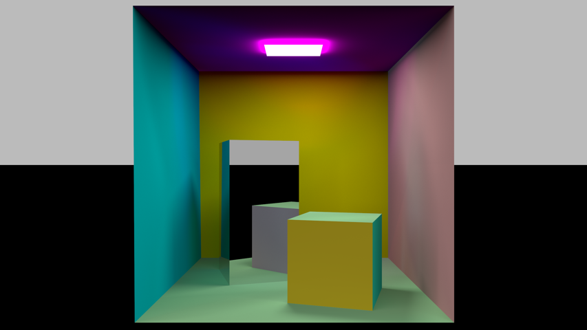
A path tracer running on the GPU, using the Vulkan ray tracing extensions.
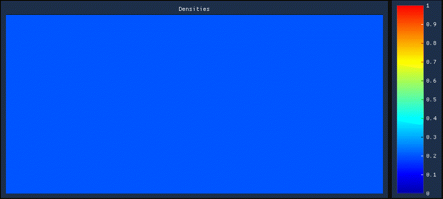
Exploring and understanding how topology optimization is implemented.
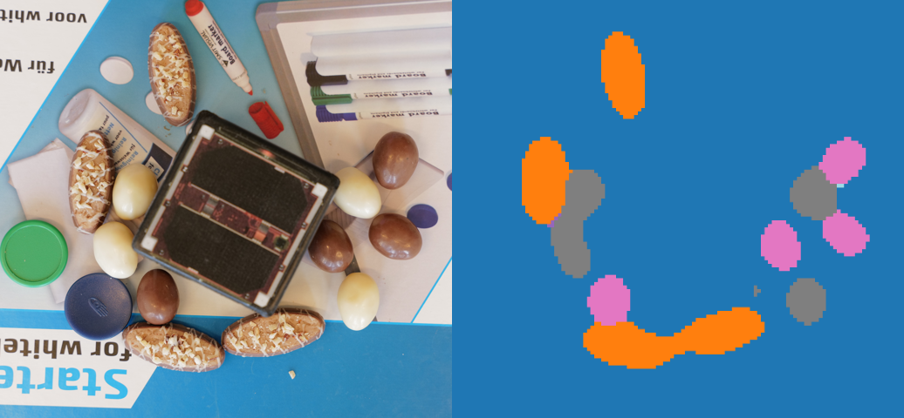
Deep learning challenge for detecting and counting chocolates in images.
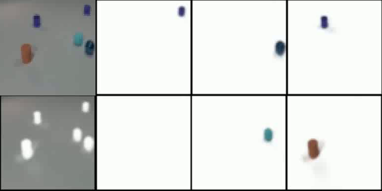
End-to-end PyTorch pipeline that learns rigid objects dynamics directly from raw video, pushing unsupervised, object-centric vision toward richer physical reasoning.
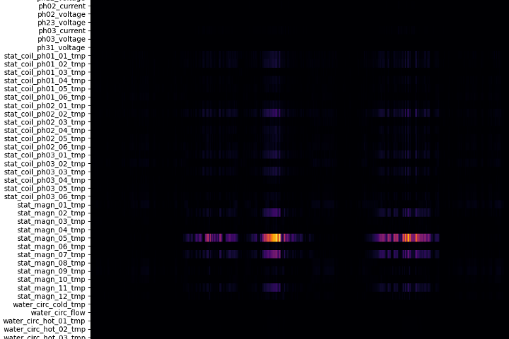
Implementation and evaluation of multiple anomaly detection approaches on a hydropower unit's generators, assessed using both synthetic anomalies and real operational data. The goal is to detect potential anomalies early and provide insights beyond the existing threshold-based monitoring system.
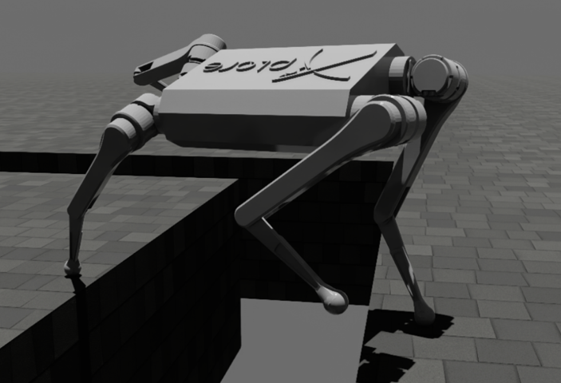
Quadruped training with PPO using the GPU-accelerated Isaac Lab framework and PyTorch, enabling it to notably climb 30cm stair steps, tackle 60% slopes and clear 80cm gaps. A vision-only policy distilled for deployment with a single depth camera removed the need for height map computation and guided the robot's hardware roadmap.
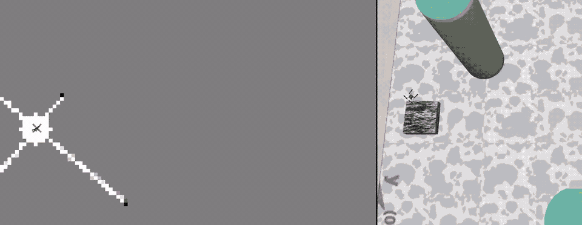
Simulation of a Crazyflie drone in Webots for a navigation task. The drone builds a map of its environment while searching for a platform in the landing area.
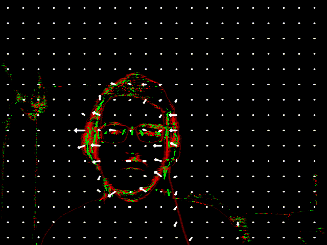
Real-time optical flow on an FPGA, exploiting binary elementary motion detectors. Implemented as a Verilog module on a virtual prototype running a C firmware. Leverages custom instructions and DMA-accelerated streaming for efficient computation and overcoming memory bottlenecks.
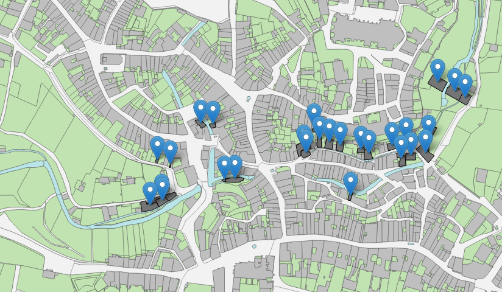
Water-related industries on the Flon and Louve rivers in 1727, 1831 and 1888 in Lausanne.
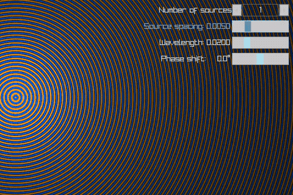
An interactive simulation of a phased array.
A neural network implemented from scratch learning the mapping between pixel coordinates and pixel color of an image, using Fourier features.
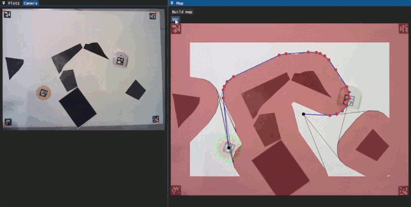
Project using the Thymio robot. Uses vision from an overhead camera, sensory feedback and state estimation for robust navigation in an unknown environment, with arbitrary target positions.
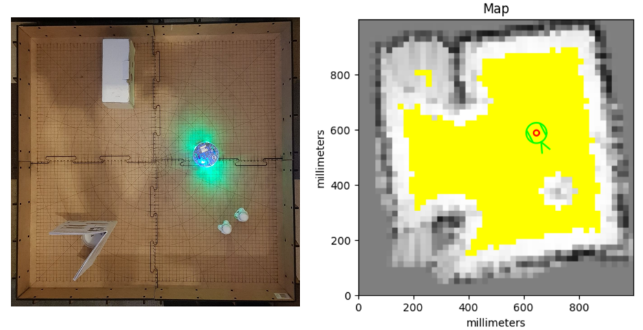
Project using the E-Puck2 robot. Uses a TOF sensor and odometry to build a map of its environment and move around safely.
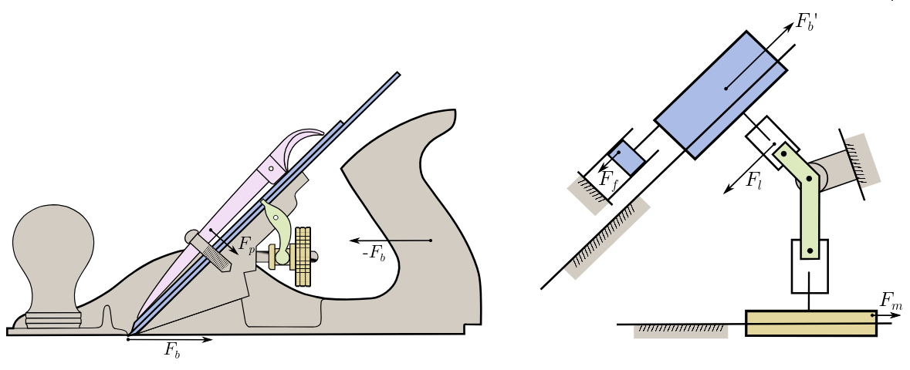
Reverse engineering of a wood plane.
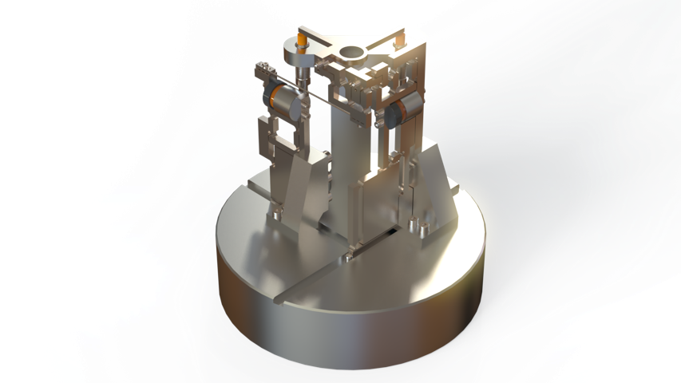
Dynamically balanced two-degree-of-freedom roll/pitch mechanism for the high-frequency scanner of a femtosecond laser micromachining machine.
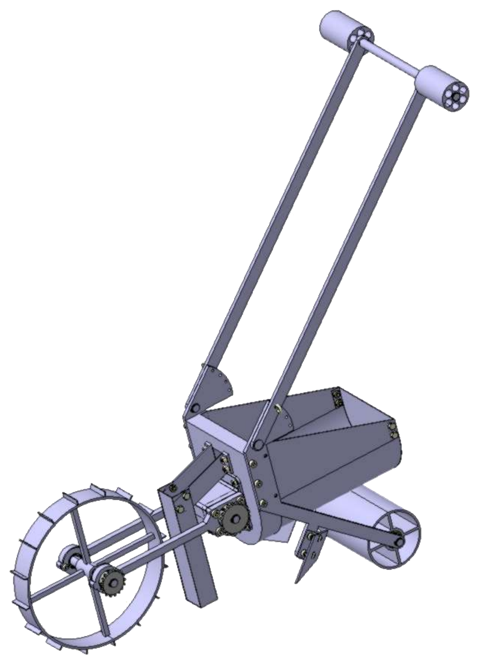
Seeder with configurable seed size and spacing.